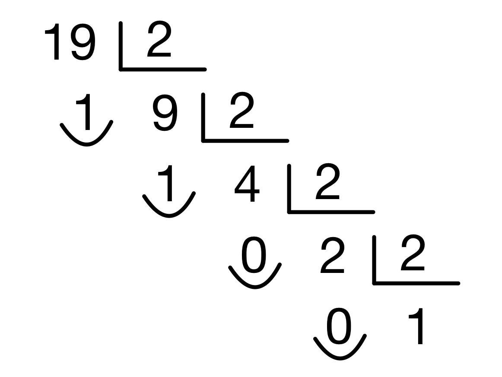
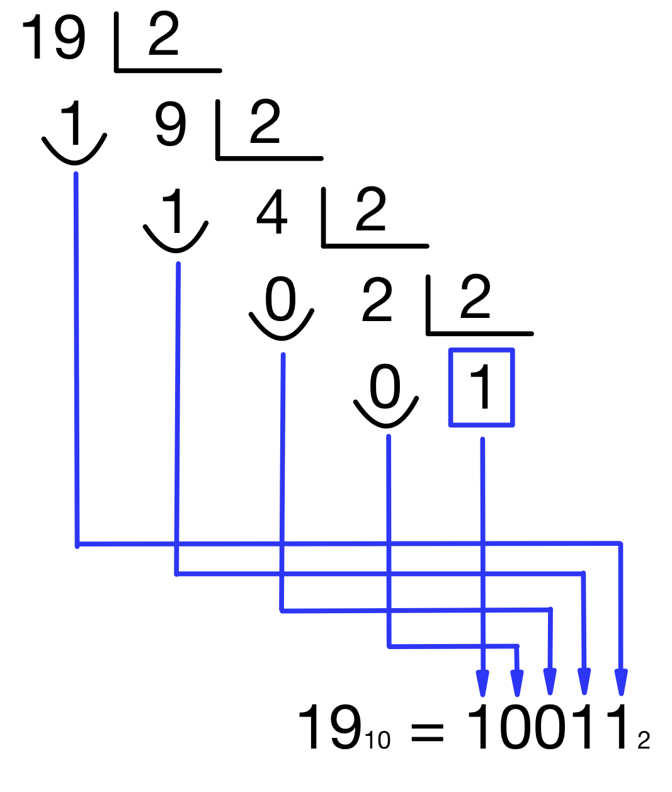
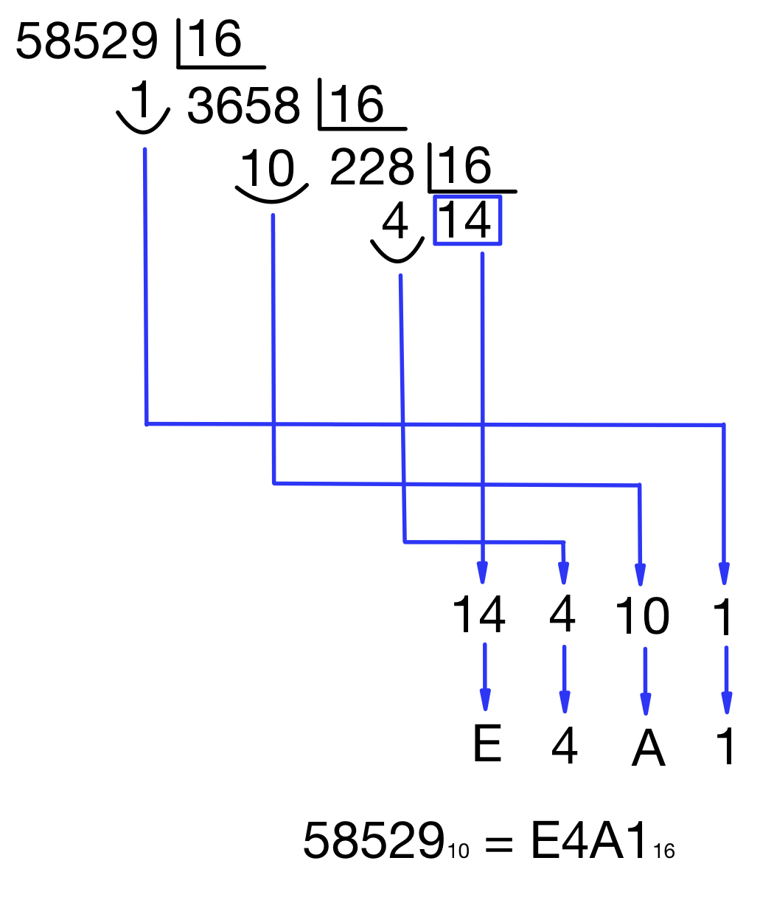

Sistemas de numeración para circuitos digitales
Los sistemas de numeración son los distintos conjuntos de símbolos capaces de representar la información numérica.
Cada uno de ellos hace referencia a la base del sistema de numeración, que representa la cantidad de dígitos (símbolos distintos) que se utilizan para representar todos los números.
Se pueden definir sistemas de numeración de cualquier base, aunque nos vamos a centrar en tres de ellos y ahora te explicaré por qué. Los tres sistemas que analizaremos son estos:
| SISTEMA | BASE | DÍGITOS UTILIZADOS |
|---|---|---|
| DECIMAL | 10 | 0 - 1 - 2 - 3 - 4 - 5 - 6 - 7 - 8 - 9 |
| BINARIO | 2 | 0 - 1 |
| HEXADECIMAL | 16 | 0 - 1 - 2 - 3 - 4 - 5 - 6 - 7 - 8 - 9 - A(10) - B(11) - C(12) - D(13) - E(14) - F(15) |
Notación para evitar ambigüedades
El sistema binario de numeración utiliza los dígitos 0 y 1 para representar cualquier número. Sin embargo, esos dígitos también se usan en el sistema decimal y en hexadecimal. Por lo tanto, el número 10011 podría ser un número binario, pero también podría ser el número "diez mil once" en decimal. Para evitar esta ambigüedad, podemos añadir la base en la que está el número mediante un subíndice. Así, si escribimos 100112, sabemos que el número es binario y, si escribimos 1001110, sabemos que es decimal. Lo mismo ocurre para cualquier número hexadecimal que pueda ser confundido con uno decimal.
Importancia de estos tres sistemas en circuitos digitales
¿Por qué estudiamos estos sistemas en concreto y no otros? Vamos por partes:
Sistema decimal
Los humanos tenemos 10 dedos en las manos, por lo que nuestros antepasados contaban a menudo con ellos. Por lo tanto, se podían contar hasta 10 cantidades diferentes y, si se necesitaba contar más, se anotaban los grupos de 10 cosas que se habían contado antes.
Por consiguiente, de manera natural, nació el sistema decimal para numerar todas las cosas y es el que usamos hoy en día prácticamente para todo. Así, es nuestro sistema de referencia natural para los otros dos.
Sistema binario
Los circuitos digitales no pueden trabajar con 10 niveles diferentes de tensiones, porque sería muy difícil tanto generarlos como manipularlos matemáticamente e incluso diferenciarlos entre sí, por lo que un sistema digital no puede trabajar en sistema decimal. En su lugar, los circuitos digitales sólo trabajan con dos niveles de tensión, por lo que sólo pueden usar dos "dígitos" distintos para hacer sus cálculos. Por tanto, los sistemas digitales usan el sistema binario de numeración.
Al ser el sistema nativo de los circuitos digitales, hay una serie de términos que debemos controlar:
- Cada dígito del sistema binario se denomina "bit" (abreviatura de binary digit).
- Al conjunto de 8 bits consecutivos se le denomina "byte".
- En el sistema binario, multiplicar por 2 equivale a añadir un cero al final del número. Es tan sencillo como para nosotros multiplicar por 10. Por eso, en los sistemas digitales, se utilizan más a menudo las potencias de 2 que los múltiplos de 10. Así, lo normal en un ordenador es tener 8, 16, 32 o 64 GB de RAM (y no, por ejemplo, 10, 20, 30, 50, etc). Esto incluso se llega a utilizar para los prefijos, así 1 kilobyte (kB) = 1024 bytes, 1 megabyte (MB) = 1024 kB, 1 gigabyte (GB) = 1024 MB, etc. porque 1024 es la potencia de 2 más cercana al número 1000 (1024 = 210).
Sistema hexadecimal
El sistema binario es muy útil para los circuitos digitales, pero implica usar muchísimas cifras para codificar números grandes. Si intentamos leer números en binario, tenemos que leer muchos dígitos (bits) y, con confundir un 1 y un 0, el número resultante puede ser muy diferente.
Para facilitar la lectura de números binarios, los dígitos se suelen agrupar en grupos de cuatro, que es un número fácil de visualizar por un humano. Si tenemos cuatro dígitos binarios, podemos representar 16 valores diferentes (24). Si le asignamos a cada uno de ellos un dígito del sistema hexadecimal (que es el que tiene 16 dígitos), cada grupo estará representado por un único dígito y será mucho más "legible" y manejable.
Por tanto, el sistema hexadecimal se utiliza como un sistema de compromiso, fácil de leer y entender por un humano pero, a la vez, directamente traducible en binario para una máquina.
Los dígitos del sistema hexadecimal del 0 al 9 valen exactamente lo mismo que los del sistema decimal y los que son letras tienen los siguientes valores: A = 10, B = 11, C = 12, D = 13, E = 14 y F = 15.
A continuación, aprenderemos a representar cualquier número en cualquiera de estos sistemas de numeración.
Originalmente el byte fue elegido para ser un submúltiplo del tamaño de palabra de un ordenador, desde cinco a doce bits. La popularidad de la arquitectura IBM S/360 que empezó en los años 1960 y la explosión de las microcomputadoras basadas en microprocesadores de 8 bits en los años 1980 ha hecho obsoleta la utilización de otra cantidad que no sean 8 bits.
En ocasiones, sí se utiliza el número 1000 para los prefijos (sobre todo en transmisiones de bits, no tanto en almacenamiento de información). De hecho, para evitar la posible ambigüedad, hasta se definió un conjunto nuevo de prefijos para el sistema binario -kibi (ki) en vez de kilo, mebi (Mi) en vez de mega, gibi (Gi) en vez de giga,...- Nosotros no los utilizaremos, pero es recomendable que los conozcas.
Conversiones binario ↔ decimal
Conversión BINARIO → DECIMAL
En el sistema decimal empleamos los diez dígitos para expresar cualquier cantidad, en forma de suma de potencias de 10, es decir, 10n. Por ejemplo, el número 3.457 se puede expresar en potencias de 10 así:
\[3457_{10}=3\cdot 10^{3}+4\cdot 10^{2} + 5\cdot 10^{1} + 7\cdot 10^{0}\]
De forma análoga, para convertir cualquier número binario en decimal, multiplicaremos cada cifra (bit) por una potencia de 2. El resultado, calculado en decimal, será el número en base 10:
\[\begin{matrix} \boldsymbol{10011}_{2} = 1\cdot 2^{4} + 0\cdot 2^{3}+0\cdot 2^{2} + 1\cdot 2^{1}+ 1\cdot 2^{0} = \\=1\cdot 16 + 0\cdot 8+0\cdot 4+1\cdot 2+1\cdot 1=16 + 2 + 1 = \boldsymbol{19}_{10}\end{matrix}\]
Conversión DECIMAL → BINARIO
Existen varias formas de codificar un número decimal en binario. Se puede cambiar matemáticamente de base 10 a base 2 todo el número, que sería la codificación natural. Sin embargo, en ocasiones, dependiendo de la aplicación concreta, es mejor codificar el número cifra a cifra, en vez de hacerlo todo de golpe, en lo que se llama codificación BCD.
Código binario natural
Es la conversión directa del número mediante un cambio de base matemático. La forma de convertir cualquier número decimal en binario es dividir el número en decimal entre 2 hasta que el último cociente sea inferior a 2 (será 1 si el número es impar o 0 si es par).

El número binario se construye tomando primero el último cociente y luego añadiendo los restos en el orden inverso en que se han ido obteniendo:

Códigos BCD (decimal codificado en binario)
Consisten en codificar cada cifra del número por separado, utilizando 4 bits para cada una (con 3 bits no tendríamos suficiente para las 10 cifras decimales, porque sólo podríamos codificar 23 = 8 cifras).
Esa codificación puede hacerse cambiando directamente de base la cifra, pero también se pueden cambiar las ponderaciones de cada bit para obtener diferentes codificaciones. Las más utilizadas son:
Código BCD natural (8421)
Se usan las ponderaciones naturales de cada bit (23 = 8, 22 = 4, 21 = 2 y 20 = 1), por lo que es simplemente cambiar de base cada cifra como vimos en el código binario natural:
1910 = 1(0001) 9(1001) = 0001 10012 (porque 1 = 0·8 + 0·4 + 0·2 + 1·1 y 9 = 1·8 + 0·4 + 0·2 + 1·1)
Código Aiken (2421)
Se usan unas ponderaciones diferentes para cada bit (en este caso, 2, 4, 2 y 1), siempre empezando a asignar pesos por la derecha, por lo que se codificaría de esta manera:
1910 = 1(0001) 9(1111) = 0001 11112 (porque 1 = 0·2 + 0·4 + 0·2 + 1·1 y 9 = 1·2 + 1·4 + 1·2 + 1·1)
Como ves, este código se utiliza para que la menor cifra posible (el 0) se codifique con todos los bits a cero y la mayor cifra posible (el 9), se codifique con todos los bits a 1. Además, las cifras del 0 al 9 codificadas en código Aiken son simétricas entre sí, lo que hace que este código sea muy eficiente para realizar operaciones de resta y división.
Es importante que tengas en cuenta que hay que empezar a asignar pesos siempre por la derecha, por lo que la cifra "5" no sería nunca el 0101 (que podría ser si empezamos a asignar por la izquierda), sino que debe ser el 1011.
Código exceso tres
El código exceso 3 es un código en donde la ponderación no existe (no hay “pesos” como en el código BCD natural y el código Aiken). En su lugar, simplemente se toma la cifra a codificar, se le suma tres, y se codifica en binario natural:
1910 = (1+3)(0100) (9+3)(1100) = 0100 11002 (porque 4 = 0·8 + 1·4 + 0·2 + 0·1 y 12 = 1·8 + 1·4 + 0·2 + 0·1)
Con esta codificación se consigue lo mismo que con el código Aiken: una simetría entre las cifras que lo hace muy eficiente para operaciones de resta y división.
En esta tabla puedes ver una comparativa entre los diferentes tipos de codificación para todas las cifras decimales (del 0 al 9):
| DECIMAL | BCD NATURAL | BCD AIKEN | EXCESO TRES | |||||||||
|---|---|---|---|---|---|---|---|---|---|---|---|---|
| 0 | 0 | 0 | 0 | 0 | 0 | 0 | 0 | 0 | 0 | 0 | 1 | 1 |
| 1 | 0 | 0 | 0 | 1 | 0 | 0 | 0 | 1 | 0 | 1 | 0 | 0 |
| 2 | 0 | 0 | 1 | 0 | 0 | 0 | 1 | 0 | 0 | 1 | 0 | 1 |
| 3 | 0 | 0 | 1 | 1 | 0 | 0 | 1 | 1 | 0 | 1 | 1 | 0 |
| 4 | 0 | 1 | 0 | 0 | 0 | 1 | 0 | 0 | 0 | 1 | 1 | 1 |
| 5 | 0 | 1 | 0 | 1 | 1 | 0 | 1 | 1 | 1 | 0 | 0 | 0 |
| 6 | 0 | 1 | 1 | 0 | 1 | 1 | 0 | 0 | 1 | 0 | 0 | 1 |
| 7 | 0 | 1 | 1 | 1 | 1 | 1 | 0 | 1 | 1 | 0 | 1 | 0 |
| 8 | 1 | 0 | 0 | 0 | 1 | 1 | 1 | 0 | 1 | 0 | 1 | 1 |
| 9 | 1 | 0 | 0 | 1 | 1 | 1 | 1 | 1 | 1 | 1 | 1 | 1 |
Conversiones binario ↔ hexadecimal
Conversión BINARIO → HEXADECIMAL
Para convertir un número binario a hexadecimal tenemos que agrupar los bits del número binario de cuatro en cuatro, empezando desde la derecha (si no tenemos suficientes bits para completar un grupo de cuatro, rellenamos con ceros a la izquierda). Después convertiremos cada grupo de cuatro bits a decimal, como ya hemos visto, y a cada valor obtenido le asignamos la cifra hexadecimal que corresponda.
Ejemplo: convertir el número 111011011012 a hexadecimal.
1 - Se agrupan los bits de cuatro en cuatro, rellenando con ceros a la izquierda si es necesario:
11101101101 = 0111 0110 1101
2 - Se convierte a decimal cada grupo de cuatro bits:
- 0111 = 0·23 + 1·22 + 1·21 + 1·20 = 0·8 + 1·4 + 1·2 + 1·1 = 4 + 2 + 1 = 7
- 0110 = 0·23 + 1·22 + 1·21 + 0·20 = 0·8 + 1·4 + 1·2 + 0·1 = 4 + 2 = 6
- 1101 = 1·23 + 1·22 + 0·21 + 1·20 = 1·8 + 1·4 + 0·2 + 1·1 = 8 + 4 + 1 = 13
3 - Se asigna a cada valor obtenido la cifra hexadecimal que corresponda:
- 710 = 716
- 610 = 616
- 1310 = D16
Por lo tanto, la conversión es la siguiente:
111011011012 = 76D16
Conversión HEXADECIMAL → BINARIO
Se toman las cifras del número hexadecimal por separado y se expresan en decimal. Después, cada valor decimal se convierte a binario como ya vimos en la sección anterior.
Ejemplo: convertir el número 76D16 a binario
1 - Se toman las cifras por separado:
76D = 7 6 D
2 - Se expresan en decimal:
- 716 = 710
- 616 = 610
- D16 = 1310
3 - Se convierte cada valor decimal a binario:
- 710 = 01112
- 610 = 01102
- 1310 = 11012
Por lo tanto, la conversión es la siguiente:
76D16 = 01112 01102 11012 = 111011011012
Conversiones hexadecimal ↔ decimal
Estas conversiones se realizan exactamente igual que las que hemos visto BINARIO ↔ DECIMAL, pero utilizando el 16 en lugar del 2.
Conversión HEXADECIMAL → DECIMAL
Al igual que en la transformación de binario a decimal, se multiplica el número hexadecimal por las potencias, ahora de 16. Sólo tienes que recordar sustituir las cifras hexadecimales por sus valores decimales si es necesario. Después, se realiza la suma y se obtiene el número en el sistema decimal.
Por ejemplo, para convertir el número E4A116 a decimal:
\[\begin{matrix}\boldsymbol{E4A1}_{16} = E\cdot 16^{3}+4\cdot 16^{2}+A\cdot 16^{1}+1\cdot 16^{0} = \\=14\cdot 16^{3}+4\cdot 16^{2}+10\cdot 16^{1}+1\cdot 16^{0} = \\=14\cdot 4096+4\cdot 256+10\cdot 16+1\cdot 1 = \\=57344+1024+160+1 = \boldsymbol{58529}_{10}\end{matrix}\]
Conversión DECIMAL → HEXADECIMAL
Se va dividiendo el número decimal entre 16 hasta que se obtenga un cociente menor de 16. A continuación, se toma el último cociente y los diferentes restos en orden inverso al que se han obtenido. Si alguno de esos valores es mayor que 9, se le asigna la cifra hexadecimal correspondiente.
Lo vemos con un ejemplo, que sería convertir el número 5852910 a hexadecimal:

EJERCICIO
Completa la siguiente tabla con los valores de los números A, B y C en las diferentes bases:
| NÚMERO | DECIMAL | HEXADECIMAL | BINARIO |
|---|---|---|---|
| A | 237 | ||
| B | 1F6 | ||
| C | 1011001101 |